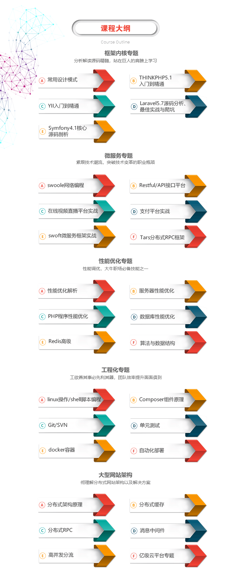

使用过Redis，那就先说说使用过那些场景吧
字符串缓存
//举例
$redis->set();
$redis->get();
$redis->hset();
$redis->hget();
队列
//举例
$redis->rpush();
$redis->lpop();
$redis->lrange();
发布订阅
//举例
$redis->publish();
$redis->subscribe();
计数器
//举例
$redis->set();
$redis->incr();
排行榜
//举例
$redis->zadd();
$redis->zrevrange();
$redis->zrange();
集合间操作
//举例
$redis->sadd();
$redis->spop();
$redis->sinter();
$redis->sunion();
$redis->sdiff();
悲观锁
解释：悲观锁(Pessimistic Lock), 顾名思义，就是很悲观。
每次去拿数据的时候都认为别人会修改，所以每次在拿数据的时候都会上锁。
场景：如果项目中使用了缓存且对缓存设置了超时时间。
当并发量比较大的时候，如果没有锁机制，那么缓存过期的瞬间，
大量并发请求会穿透缓存直接查询数据库，造成雪崩效应。
/**
* 获取锁
* @param String $key 锁标识
* @param Int $expire 锁过期时间
* @return Boolean
*/
public function lock($key = '', $expire = 5) {
$is_lock = $this->_redis->setnx($key, time()+$expire);
//不能获取锁
if(!$is_lock){
//判断锁是否过期
$lock_time = $this->_redis->get($key);
//锁已过期，删除锁，重新获取
if (time() > $lock_time) {
unlock($key);
$is_lock = $this->_redis->setnx($key, time() + $expire);
}
}
return $is_lock? true : false;
}
/**
* 释放锁
* @param String $key 锁标识
* @return Boolean
*/
public function unlock($key = ''){
return $this->_redis->del($key);
}
// 定义锁标识
$key = 'test_lock';
// 获取锁
$is_lock = lock($key, 10);
if ($is_lock) {
echo 'get lock success<br>';
echo 'do sth..<br>';
sleep(5);
echo 'success<br>';
unlock($key);
} else { //获取锁失败
echo 'request too frequently<br>';
}
乐观锁
解释：乐观锁(Optimistic Lock), 顾名思义，就是很乐观。
每次去拿数据的时候都认为别人不会修改，所以不会上锁。
watch命令会监视给定的key，当exec时候如果监视的key从调用watch后发生过变化，则整个事务会失败。
也可以调用watch多次监视多个key。这样就可以对指定的key加乐观锁了。
注意watch的key是对整个连接有效的，事务也一样。
如果连接断开，监视和事务都会被自动清除。
当然了exec，discard，unwatch命令都会清除连接中的所有监视。
$strKey = 'test_age';
$redis->set($strKey,10);
$age = $redis->get($strKey);
echo "---- Current Age:{$age} ---- <br/><br/>";
$redis->watch($strKey);
// 开启事务
$redis->multi();
//在这个时候新开了一个新会话执行
$redis->set($strKey,30); //新会话
echo "---- Current Age:{$age} ---- <br/><br/>"; //30
$redis->set($strKey,20);
$redis->exec();
$age = $redis->get($strKey);
echo "---- Current Age:{$age} ---- <br/><br/>"; //30
//当exec时候如果监视的key从调用watch后发生过变化，则整个事务会失败
上面的一些场景，咱们大部分都使用过，却还没有提及到Rdb文件。
“对吧，使用过Redis，却不知道Rdb文件，你中枪了吗？”
Rdb文件是什么，它是干什么的
Redis 作为互联网产品开发中不可缺少的常备武器，它性能高、数据结构丰富、简单易用，但同时也是因为太容易用了，不管什么数据、不管这数据有多大、不管数据有多少，通通塞进去，最后导致的问题就是 Redis 内存使用持续上升，但是又不知道里面的数据是不是有用，是否可以拆分和清理，最可怕的是服务器发生宕机后，Redis 数据库里的所有数据将会全部丢失。
比如当内存上升，性能慢时，我们进行性能调优的时候，我们想知道：
哪些Key占用了大量的内存？
想知道每个Key的占用空间？
想知道占用空间大的Key都存了啥？
想知道占用空间大的Key的重要性，当性能慢的时候是否可以马上删除？
更想知道这些Key是哪个业务方，哪个开发创建的？这样就可以找他沟通了。
尝试解决问题的思路
一、先通过 keys * 命令，拿到所有的 key，然后根据 key 再获取所有的内容。
优点：可以不使用 Redis 机器的硬盘，直接网络传输。
缺点：如果 key 数据特别多，keys 命令可能会直接导致 Redis 卡住，从而影响业务使用 或 对 Redis 请求太多次，资源消耗多，遍历数据太慢。
二、开启 aof，通过 aof 文件获取所有的数据。
优点：无需影响 Redis 服务，完全离线操作，足够安全。
缺点：有一些 Redis 实例写入频繁，不适合开启 aof，普适性不强；aof 文件有可能特别大，传输、解析起来太慢，效率低。
三、使用 bgsave，获取 rdb 文件，解析后获取数据。
优点：机制成熟，可靠性好；文件相对小，传输、解析效率高。
缺点：bgsave 虽然会 fork 子进程，但还是有可能导致主进程卡住一段时间，对业务有产生影响的风险。
综合评估后，决定采用低峰期在从节点做 bgsave 获取 rdb 文件，相对安全可靠，也可以覆盖所有业务的 Redis 集群。
也就是说每个实例每天在低峰期自动生成一个 .rdb 文件，即使报表数据有一天的延迟也是可以接受的。
“哦，原来.rdb文件是磁盘的缓存文件，那么如何开启持久化呢？”
下面简单的介绍下，Redis 的持久化。
Redis 支持两种方式的持久化，一种是RDB方式，一种是AOF方式。
RDB 是 Redis 用来进行持久化的一种方式，是把当前内存中的数据集，快照写入磁盘。
RDB - 自动
RDB（Redis DataBase）方式是通过快照完成的，当符合一定条件时Redis会自动将内存中的所有数据进行快照，并且存储到硬盘上，RDB是Redis的默认持久化方式。
vim /usr/local/redis/conf/redis.conf
save 900 1 #15分钟内有至少1个键被更改
save 300 10 #5分钟内至少有10个键被更改
save 60 1000 #1分钟内至少有10000个键被更改
#以上条件都是或的关系，当满足其一就会进行快照。
dbfilename "dump.rdb" #持久化文件名称
dir "/data/dbs/redis/6381" #持久化数据文件存放的路径
#配置文件修改后，需要重启redis服务。
这里我还准备了一分学习图和资料，如下：

链接：https://pan.baidu.com/s/1v5gm7n0L7TGyejCmQrMh2g 提取码：x2p5
免费分享，但是X度限制严重，如若链接失效点击链接或搜索加群 群号518475424。
还可以通过命令行的方式进行配置：
CONFIG GET save #查看redis持久化配置
CONFIG SET save "100 20" #修改redis持久化配置
#使用命令行的方式配置，即时生效，服务器重启后需要重新配置。
RDB - 手动
save
该命令会阻塞当前Redis服务器，执行save命令期间，Redis不能处理其他命令，直到RDB过程完成为止。
显然该命令对于内存比较大的实例会造成长时间阻塞，这是致命的缺陷。
bgsave
执行该命令时，Redis会在后台异步进行快照操作，快照同时还可以响应客户端请求。
具体操作是Redis进程执行fork操作创建子进程，RDB持久化过程由子进程负责，完成后自动结束。阻塞只发生在fork阶段。
AOF
AOF（APPEND ONLY MODE）是通过保存对redis服务端的写命令（如set、sadd、rpush）来记录数据库状态的，即保存你对redis数据库的写操作。
配置日志文件如下：
vim /usr/local/redis/conf/redis.conf
dir "/data/dbs/redis/6381" #AOF文件存放目录
appendonly yes #开启AOF持久化，默认关闭
appendfilename "appendonly.aof" #AOF文件名称（默认）
appendfsync no #AOF持久化策略
auto-aof-rewrite-percentage 100 #触发AOF文件重写的条件（默认）
auto-aof-rewrite-min-size 64mb #触发AOF文件重写的条件（默认）
#上面的每个参数，可以找资料了解下，不做多解释了。
RDB 与 AOF 的优缺点，见上面的即可。
至此，我们了解了 Redis 持久化的一些配置，里面的细节建议查询相关资料进行研究。
接下来继续，通过上一步我们拿到了 rdb 文件，就相当于拿到了Redis实例的数据。
解析 rdb 文件，获取key和value的值。
根据相应的数据结构及内容，估算内存消耗。
统计并生成报表。
分析工具
雪球 rdr：https://github.com/xueqiu/rdr
redis-rdb-tools：https://github.com/sripathikrishnan/redis-rdb-tools
小结
讲解了工作中常用的 redis 使用场景。
讲解了 redis 持久化的两个方式（RDB、AOF）。
推荐了两个分析rdb的工具。
通过对 redis 的使用 到 了解到服务器上如何对redis数据做持久化快照，再到如何利用工具进行分析rdb文件，最后通过分析后的数据，可以反过来对 redis 的使用提出一些建议。
其他知识点也是这样，我们不能只停留在方法的简单调用，就觉得理解了这门技术！
联想
其实上面分析出来的数据，是不可能定位到这个key是哪个业务方的，哪个开发创建的，是否重要等等，那我们应该怎么做呢？
制定开发团队的Redis Key的使用规范，通过key的命名可以得到：
属于什么业务（加域名表示）
属于什么数据类型（加数据类型标示）
是否设置过期时间
…
统一平台进行Redis Key的申请，只有申请了才能进行使用：
填写申请人
填写申请时间
填写申请业务方
填写数据类型
填写Key的重要性
填写Key是否存在过期时间
根据填写项生成规范的key名称
…(等等需要标记的)
上面我们已经能分析出某个redis实例rdb文件的内容，通过分析出来的内容 与 统一平台申请的数据，进行整合，分析key的合格率、内存使用量、不同数据类型的分布、内存占用量Top 100的值 等等。
我们可以通过运维了解到，每个服务器与实例之间的配置关系，就可以了解到某台服务器（N个实例）上的 key的合格率、内存使用量、不同数据类型的分布、内存占用量Top 100的值等等。
这样，在后台系统中就可以看到哪台服务器，哪个实例的使用情况，解决了Redis滥用并无法进行监控的问题。